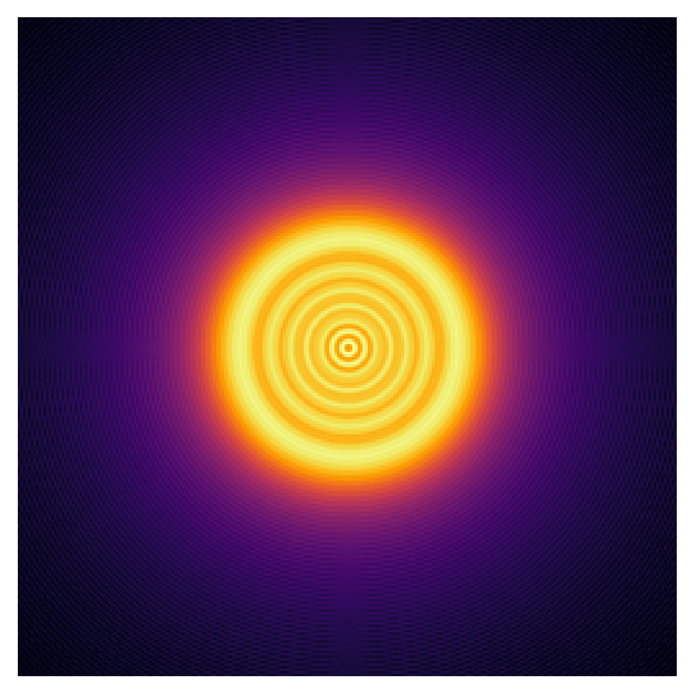

Lentil: Fast optical propagation
Lentil is an Python package for developing high-performance diffraction simulations. Lentil provides an easy to use framework for modeling optical systems and simulating the wave propagation of light through them. Lentil was originally developed at NASA's Jet Propulsion Library and is now available as open-source software.
